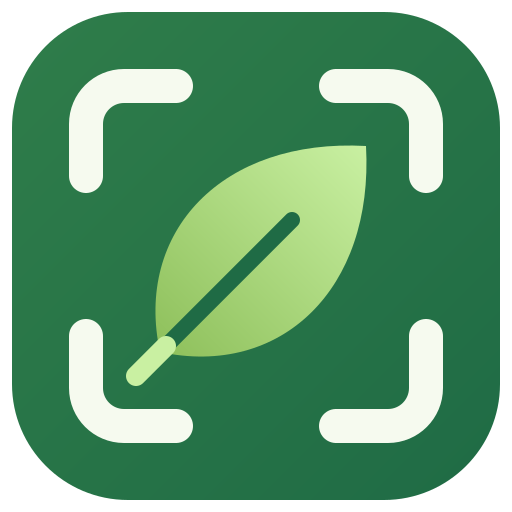

VerdeSnap
My first tool, made by me ✧
Los días pequeños también cuentan.
✎ Mark
Aa Read
文 Translate
Los días pequeños también cuentan.
小小的日子也算数 ✧
Alt + A
Snip
Mark
Read
Translate
Little tools for
a little green life.
VerdeSnap for Windows
github.com/schwa1997/verdeSnap